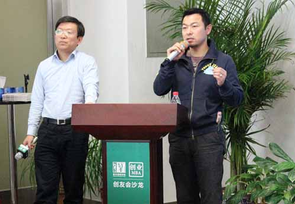

Introduction 讲师简介

袁冰
拥有互联网行业背景，十余年互联网金融领域风云人物，参与创业易宝支付，去哪儿网，中汇支付合伙人，好贷宝总裁。资深互联网及互联网金融专家，厚德创新谷导师及天使投资人，加拿大皇家大学MBA，北大纵横后MBA三期，新华都商学院MBA校友会会长。
在传统行业如何开展O2O商业模式，传统企业线下营销转向线上营销，以及移动互联网营销所需要的技术、思想、方法、理论。从正反方面举例了传统行业向互联网融合的经典案例。提出了打通所有业务场景是传统经营与电子商务的核心区别的深刻见解。
从业经历
- 创业易宝支付、去哪儿网、中汇支付——合伙人
- 北京大学电子商务创业与转型投资研究中心——副主任
- 好贷宝——总裁
- 资深互联网及互联网金融专家
- 厚德创新谷——导师及天使投资人
擅长课题
| 互联网金融 | 传统行业向互联网融合及经典案例 | 传统行业如何开展O2O商业模式 |
| 传统企业线下营销转向线上营销 | 传统经营与电子商务的核心区别 |
| 获取课纲，请联系助教 |
授课及交流机构
北大纵横EMBA
课程风格
大师风范，自然型教学，亲切自然，注重理论与实例相结合，娓娓而谈。追求师生之间平等、协作、和谐的气氛下。课程内容注重实用性、课程设计力求新颖性、课程效果追求长效性。
授课照片

授课视频
| 点击观看 |
助教
助教：黎明
电话：13810914292
QQ : 13183702
E-mail：dodoii@126.com